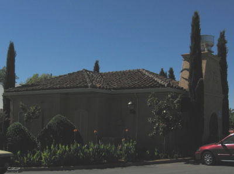

|
North America >
USA >
California >
Amador County >
Villa Toscano

Villa Toscano
Plymouth, CA
www.villatoscano.com
No Tasting Fee.
The sister winery of Bella Piazza,
Villa Toscano makes wines exclusively from Shenandoah Valley grapes. The two wineries share a winemaker and barrel tastings are offered daily for
the more popular wines which are sold as futures. There is also a bistro onsite.
Vintages:
California Shenandoah Valley Pinot Grigio
2008
California Shenandoah Valley Orange Muscat
2008
California Shenandoah Valley Viognier
2008
California Shenandoah Valley Barbera
2007
California Shenandoah Valley Merlot
2006
California Shenandoah Valley Sangiovese
2007
California Shenandoah Valley Syrah
2006
California Shenandoah Valley Tempranillo
2006
2008
California Shenandoah Valley Zinfandel
2006
California Shenandoah Valley Ericka's Reserve Zinfandel
2008
California Shenandoah Valley Fox Creek Vineyard Zinfandel
2006
2008
California Shenandoah Valley Jake's Vineyard Zinfandel
2006
2008
California Shenandoah Valley Rattlesnake Rock Vineyard Zinfandel
2006
California Shenandoah Valley Late Harvest Zinfandel
NV
California Shenandoah Valley Cerchio
2006
California Shenandoah Valley Port
2004
California Shenandoah Valley Reserve Fox Creek Vineyard Port
2006
|